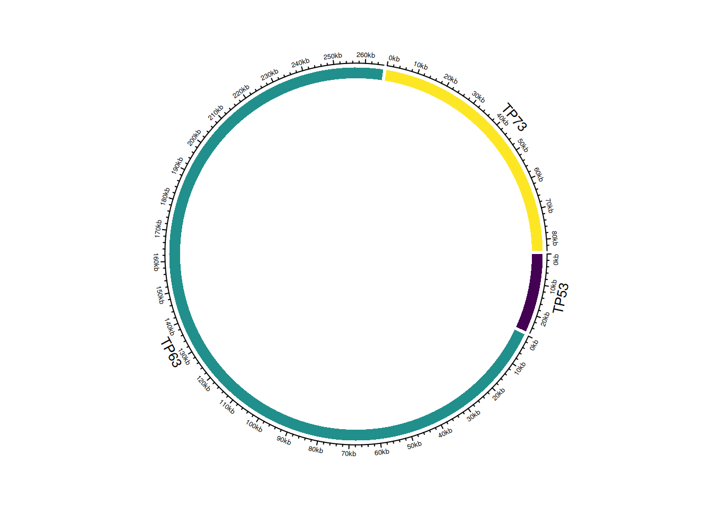

El consenso de genoma es un proceso fundamental en la bioinformática genómica que implica la generación de una secuencia de ADN representativa a partir de múltiples secuencias de lecturas de ADN. En los proyectos de secuenciación masiva de próxima generación (NGS), las secuencias de lecturas provienen de fragmentos de ADN secuenciados y suelen ser cortas y fragmentadas. El objetivo del consenso de genoma es reconstruir una secuencia de genoma completa y precisa a partir de estas lecturas.
Importancia del Consenso de Genoma
El consenso de genoma es esencial para una variedad de aplicaciones en genómica y biología molecular. Algunos de los usos más comunes incluyen:
Ensamblaje de Genomas: En proyectos de secuenciación de novo, donde no se dispone de una referencia genómica, el consenso de genoma se utiliza para ensamblar el genoma completo a partir de las secuencias de lecturas.
Variación Genómica: La identificación de variantes genómicas, como mutaciones o polimorfismos, se basa en comparaciones entre el genoma de referencia y las lecturas secuenciadas.
Análisis de Metagenómica: En estudios de metagenómica, donde se analiza el ADN de múltiples organismos en una muestra, el consenso de genoma permite identificar y caracterizar las especies presentes.
Estudios de Filogenia: La construcción de árboles filogenéticos y la comparación de genomas entre especies se basan en secuencias de consenso.
Proceso de Consenso de Genoma
El proceso de consenso de genoma implica la alineación y comparación de las secuencias de lecturas contra un genoma de referencia o entre ellas mismas. A medida que se realizan estas comparaciones, se determina la secuencia de consenso, que representa la secuencia de ADN más probable en las regiones cubiertas por las lecturas.
Herramientas y Bibliotecas
Para realizar el consenso de genoma, se utilizan herramientas y bibliotecas bioinformáticas especializadas, como Rsamtools, Samtools, Bioconductor y otras, que permiten el procesamiento eficiente de archivos de alineación (BAM/SAM) y la generación de secuencias de consenso de alta calidad.
El consenso de genoma es una parte esencial de la investigación en genómica y juega un papel crucial en la comprensión de la estructura y la función de los genomas. A medida que avanza la tecnología de secuenciación, las técnicas y las herramientas de consenso de genoma continúan evolucionando para abordar desafíos cada vez más complejos en la genómica.
Generación de consenso genómico
En esta sección, se genera un consenso genómico utilizando la biblioteca Rsamtools. Primero, se cuenta la posición de la alineación y se muestra un resumen:
Este código calcula un consenso genómico a partir de la alineación en el archivo BAM utilizando los parámetros especificados y lo almacena en un archivo FASTA en el directorio results/.
Tambien podemos ver este proceso en Linux usando el programa ivar:
En esta sección, aprenderás a realizar la anotación de genomas bacterianos utilizando la herramienta Rast Asegúrate de seguir los pasos detallados a continuación.
Paso 1: Pagina web
Antes de comenzar con la anotación, primero debemos crear un usuario en la pagina de Rast
Paso 2: Subir el genoma consenso
Una vez que tengas tu usuario, puedes ir a la siguiente direccion:
>>Your Jobs > Upload New Job
En la seccion final File Upload: debes subir el genoma cosenso.
Paso 3: Taxnomy ID
Antes de someter la anotacion debemos indicar el taxa al cual pertenece este genoma, para ello podemos ir al siguiente taxa que usaremos para el curso
Paso 4: Visualización en Gráfico Circular
Finalmente, podemos visualizar los datos de anotación en un gráfico circular utilizando la biblioteca circlize. Ejecuta estos comandos en R:
========================================
circlize version 0.4.16
CRAN page: https://cran.r-project.org/package=circlize
Github page: https://github.com/jokergoo/circlize
Documentation: https://jokergoo.github.io/circlize_book/book/
If you use it in published research, please cite:
Gu, Z. circlize implements and enhances circular visualization
in R. Bioinformatics 2014.
This message can be suppressed by:
suppressPackageStartupMessages(library(circlize))
========================================
# Crear un dataframe con los datos de anotacióndf=data.frame( name =c("TP53", "TP63", "TP73"), start =c(7565097, 189349205, 3569084), end =c(7590856, 189615068, 3652765))circos.genomicInitialize(df)# Configurar una pista en el gráfico circularcircos.track( ylim =c(0, 1), # Rango de valores en el eje Y bg.col =viridis(3), # Colores de fondo de las regiones bg.border =NA, # Sin borde en las regiones track.height =0.05# Altura de la pista)

En resumen
En esta sección, hemos cargado las bibliotecas necesarias y creado un dataframe df con los datos de anotación. Luego, inicializamos el gráfico circular utilizando circos.genomicInitialize y configuramos una pista en el gráfico circular con circos.track.